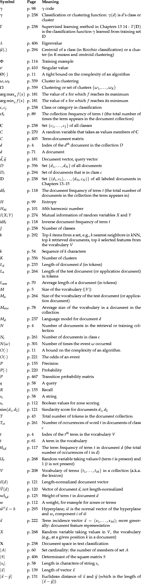

Next:
Preface
Up:
irbook
Previous:
List of Figures
Contents
Index
Table of Notations

© 2008 Cambridge University Press
This is an automatically generated page. In case of formatting errors you may want to look at the
PDF edition
of the book.
2009-04-07